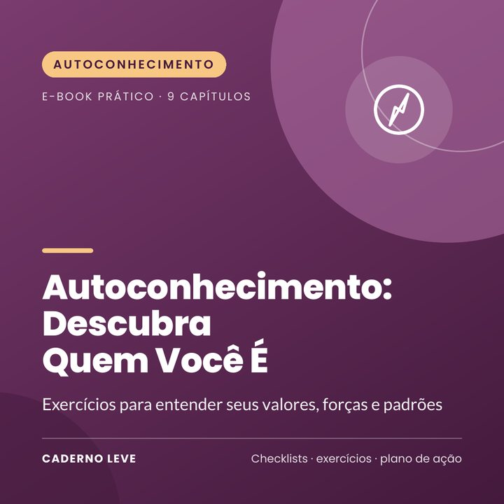

Autoconhecimento: Descubra Quem Você É
Exercícios para entender seus valores, forças e padrões: linha da vida, valores, forças de caráter, Big Five, diário de energia, Janela de Johari e roda da vida.
Sente que está vivendo no piloto automático? Entender quem você é muda a forma como escolhe trabalho, relações e planos.
O Autoconhecimento: Descubra Quem Você É é um caderno de exercícios em linguagem simples para olhar para dentro com curiosidade e sem julgamento.
Você revisita sua história, descobre seus valores e forças, entende sua personalidade com o modelo dos Cinco Grandes Fatores, identifica padrões que se repetem, mapeia o que dá e tira sua energia, aprende a pedir retorno e transforma tudo em pequenos passos com a roda da vida.
O que você vai conquistar
- Entender a própria história com outro olhar
- Descobrir seus valores e suas forças
- Conhecer sua personalidade com base científica
- Identificar padrões que se repetem
- Mapear o que energiza e o que esgota você
- Transformar descobertas em passos concretos
O que tem dentro
- Capítulo 1Por que se conhecer
- Capítulo 2A linha do tempo da sua história
- Capítulo 3Valores: o que importa de verdade
- Capítulo 4Forças: o que você tem de melhor
- Capítulo 5Personalidade: o que a ciência diz
- Capítulo 6Seus padrões
- Capítulo 7O que dá e o que tira sua energia
- Capítulo 8Como os outros veem você
- Capítulo 9Vivendo de acordo com quem você é
- ExtraResumo e plano de ação para colocar em prática
- ExtraFolha de trabalho e checklist para imprimir
Para quem é
- Quem quer tomar decisões mais alinhadas
- Quem está numa fase de mudança ou dúvida
- Quem gosta de exercícios de reflexão e escrita
Para quem não é
- Não é terapia nem substitui acompanhamento psicológico
- Não é teste de diagnóstico de personalidade
Bônus: Folha “Meu retrato” para imprimir — resumo das descobertas e próximos passos.
Aviso importante
Este e-book tem caráter educativo e de autocuidado. Ele não faz diagnóstico, não é tratamento e não substitui psicoterapia nem acompanhamento médico. Se o sofrimento estiver intenso, durando muito tempo ou atrapalhando sua vida, procure um(a) psicólogo(a), um médico ou a Unidade Básica de Saúde (UBS) mais próxima.
Se você precisar conversar agora, o CVV atende de graça, 24h, no 188 ou em cvv.org.br. Em emergência, ligue SAMU 192.